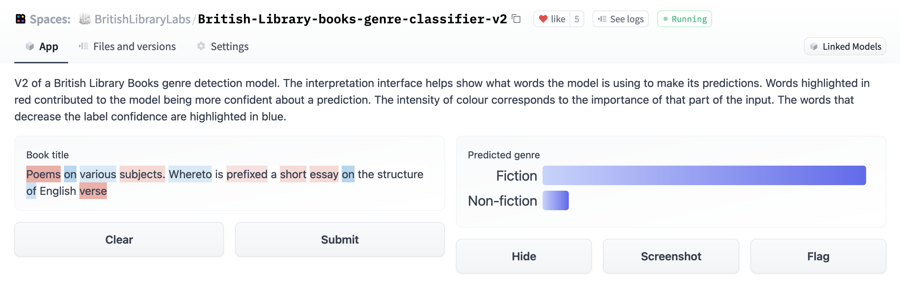

Selected projects
This page collects selected projects that I have worked on.
Machine learning projects
flyswot: using computer vision to detect ‘fake flysheets’
An increasing challenge for libraries is managing the scale of digitised material resulting from digitisation projects and ‘born digital’ materials. This project aims to detect mislabelled digitised manuscript pages.

As a result of the limitations of a previous system for hosting digitised manuscript images, many images have incorrect page metadata associated with the image. An image has been correctly labelled as an ‘end flysheet’ in the example above. This label is represented by the fse label, which is included in the filename for the image. However other types of manuscript pages also have this label incorrectly assigned, i.e. a ‘cover’ has fse in the filename. There is around a petabyte of images to review before ingesting a new library system. This project uses computer vision to support library staff in processing this collection. At the moment, this project does the following:
- pulls in an updated dataset of training examples
- trains a model on these images
- the model architecture has multiple heads to allow the model to make both a ‘crude’ prediction for whether the image is incorrectly labelled and a ‘full’ prediction for the true label.
- once a new version of the model has been trained, it is pushed to the 🤗 model hub.
- the end-user uses the model through a command-line tool which is pointed at a directory of images to be checked.
The code for the command-line tool is available here: github.com/davanstrien/flyswot/
Some of the tools used: fastai, DVC, Weights and Biases, 🤗 model hub, pytest, nox, poetry
Book Genre Detection

This project created machine learning models which would predict whether a book was ‘fiction’ or ‘non- fiction’ based on the book title:
- The project was developed to address a gap in metadata in a large scale digitised book collection.
- The project used weak supervision to generate a more extensive training set beyond the initial human-generated annotations.
- Currently, two models are publicly available, one via the 🤗 Model Hub and one via Zenodo.
- The process of creating the models is documented in a Jupyter Book. This documentation aims to communicate the critical steps in the machine learning pipeline to aid other people in the sector develop similar models. https://huggingface.co/spaces https://huggingface.co/spaces/BritishLibraryLabs/British-Library-books-genre-classifier-v2
Some of the tools used: fastai, transformers, blurr, Hugging face model hub, Jupyter Book, Snorkel, Gradio
Datasets
British Library books
- Extracted plain text and other metadata files from ALTO XML https://github.com/davanstrien/digitised-books-ocr-and-metadata
- Added the dataset to the 🤗 datasets hub
British Library Books Genre data
- Created a datasets loading script and prepared a Dataset card for a dataset supporting book genre detection using machine learning: https://huggingface.co/datasets/blbooksgenre
Datasets to support programming historian lessons
I think having more realistic datasets is important for teaching machine learning effectively. As a result, I created two datasets for two under review Programming Historian lessons.
Workshop datasets
Workshop materials
- Computer Vision for the Humanities workshop: This workshop aims to provide an introduction to computer vision aimed for humanities applications. In particular this workshop focuses on providing a high level overivew of machine learning based approaches to computer vision focusing on supervised learning. The workshop includes discussion on working with historical data. The materials are based on in progress Programming Historian lessons.
- Working with maps at scale using Computer Vision and Jupyter notebooks
- Introduction to Jupyter Notebooks: the weird and the wonderful
- Image Search: Materials for a workshop on image search with a focus on heritage data. The workshop is based on a blog post Image search with 🤗 datasets but goes into a little bit more detail.
Tutorials
- Jupyter book showing how to build an ML powered book genre classifier
- A (brief) history of advertising in US Newspapers using computer vision
- (Under review) Computer Vision for the Humanities: An Introduction to Deep Learning for Image Classification, Programming Historian lessons
- (Under development) Intro to AI for GLAM, Carpentries Lesson
Code
You can view much of my code related activity on GitHub